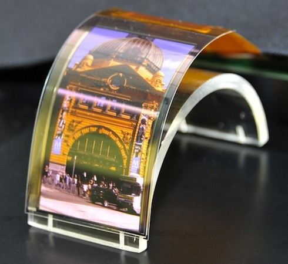

|  |
As the thinnest and the most flexible display in the world, The OLED display is designed for the next generation of smartphones, the flexible ones. These screens should be so popular in the future, so the ones we use now could easly disapear. OLED screens are built of a 0.3 thick Plastic layer on Top of a 50-100 nanometre thick layer of tantalum(V) oxide (Ta2 O5), an advanced optical thin-film coating material. And then, finaly the oled surface. |